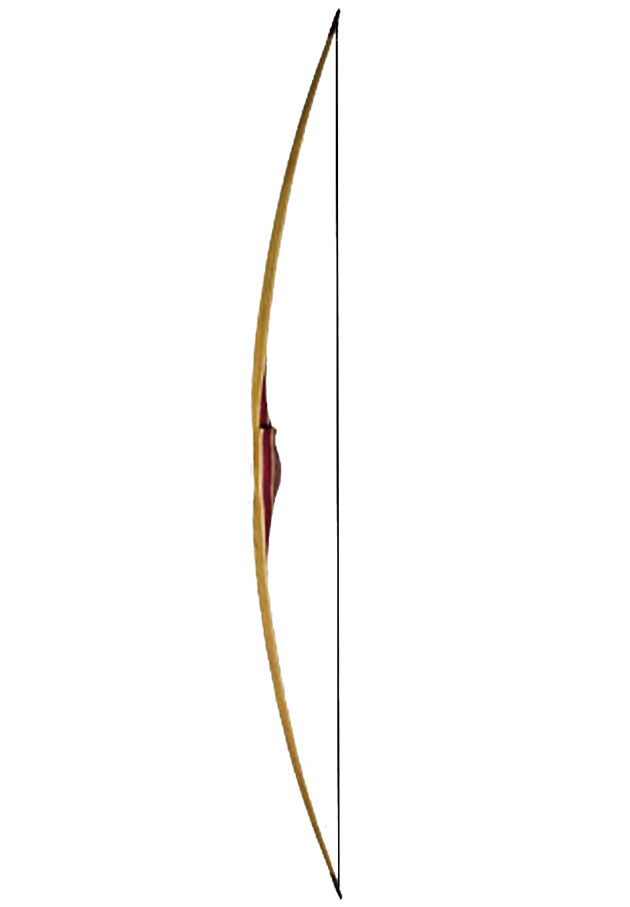

Equipment
Bows
While there is great variety in the construction details of bows (both historic and modern), all bows consist of a string attached to elastic limbs that store mechanical energy imparted by the user drawing the string. Bows may be broadly split into two categories: those drawn by pulling the string directly and those that use a mechanism to pull the string.
Directly drawn bows may be further divided based upon differences in the method of limb construction, notable examples being self bows, laminated bows and composite bows. Bows can also be classified by the bow shape of the limbs when unstrung; in contrast to traditional European straight bows, a recurve bow and some types of longbow have tips that curve away from the archer when the bow is unstrung. The cross-section of the limb also varies; the classic longbow is a tall bow with narrow limbs that are D-shaped in cross section, and the flatbow has flat wide limbs that are approximately rectangular in cross-section. Cable-backed bows use cords as the back of the bow; the draw weight of the bow can be adjusted by changing the tension of the cable. They were widespread among Inuit who lacked easy access to good bow wood. One variety of cable-backed bow is the Penobscot bow or Wabenaki bow, invented by Frank Loring (Chief Big Thunder) about 1900. It consists of a small bow attached by cables on the back of a larger main bow.
In different cultures, the arrows are released from either the left or right side of the bow, and this affects the hand grip and position of the bow. In Arab archery, Turkish archery and Kyūdō, the arrows are released from the right hand side of the bow, and this affects construction of the bow. In western archery, the arrow is usually released from the left hand side of the bow for a right-handed archer.
Compound bows are designed to reduce the force required to hold the string at full draw, hence allowing the archer more time to aim with less muscular stress. Most compound designs use cams or elliptical wheels on the ends of the limbs to achieve this. A typical let-off is anywhere from 65% to 80%. For example, a 60-pound (27 kg) bow with 80% let-off only requires 12 pounds-force (5.4 kgf; 53 N) to hold at full draw. Up to 99% let-off is possible. The compound bow was invented by Holless Wilbur Allen in the 1960s (a US patent was filed in 1966 and granted in 1969) and it has become the most widely used type of bow for all forms of archery in North America.
Mechanically drawn bows typically have a stock or other mounting, such as the crossbow. Crossbows typically have shorter draw lengths compared to compound bows. Because of this, heavier draw weights are required to achieve the same energy transfer to the arrow. These mechanically drawn bows also have devices to hold the tension when the bow is fully drawn. They are not limited by the strength of a single archer and larger varieties have been used as siege engines.


Arrows
The most common form of arrow consists of a shaft, with an arrowhead at the front end, and fletchings and a nock at the other end. Arrows across time and history have normally been carried in a container known as a quiver, which can take many different forms. Shafts of arrows are typically composed of solid wood, bamboo, fiberglass, aluminium alloy, carbon fiber, or composite materials. Wooden arrows are prone to warping. Fiberglass arrows are brittle, but can be produced to uniform specifications easily. Aluminium shafts were a very popular high-performance choice in the latter half of the 20th century, due to their straightness, lighter weight, and subsequently higher speed and flatter trajectories. Carbon fiber arrows became popular in the 1990s because they are very light, flying even faster and flatter than aluminium arrows. Today, the most popular arrows at tournaments and Olympic events are made of composite materials.
The arrowhead is the primary functional component of the arrow. Some arrows may simply use a sharpened tip of the solid shaft, but separate arrowheads are far more common, usually made from metal, stone, or other hard materials. The most commonly used forms are target points, field points, and broadheads, although there are also other types, such as bodkin, judo, and blunt heads.
Fletching is traditionally made from bird feathers, but solid plastic vanes and thin sheet-like spin vanes are used. They are attached near the nock (rear) end of the arrow with thin double sided tape, glue, or, traditionally, sinew. The most common configuration in all cultures is three fletches, though as many as six have been used. Two makes the arrow unstable in flight. When the arrow is three-fletched, the fletches are equally spaced around the shaft, with one placed such that it is perpendicular to the bow when nocked on the string, though variations are seen with modern equipment, especially when using the modern spin vanes. This fletch is called the "index fletch" or "cock feather" (also known as "the odd vane out" or "the nocking vane"), and the others are sometimes called the "hen feathers". Commonly, the cock feather is of a different color. However, if archers are using fletching made of feather or similar material, they may use same color vanes, as different dyes can give varying stiffness to vanes, resulting in less precision. When an arrow is four-fletched, two opposing fletches are often cock feathers, and occasionally the fletches are not evenly spaced.
The fletching may be either parabolic cut (short feathers in a smooth parabolic curve) or shield cut (generally shaped like half of a narrow shield), and is often attached at an angle, known as helical fletching, to introduce a stabilizing spin to the arrow while in flight. Whether helical or straight fletched, when natural fletching (bird feathers) is used it is critical that all feathers come from the same side of the bird. Oversized fletchings can be used to accentuate drag and thus limit the range of the arrow significantly; these arrows are called flu-flus. Misplacement of fletchings can change the arrow's flight path dramatically.
Bowstring
Dacron and other modern materials offer high strength for their weight and are used on most modern bows. Linen and other traditional materials are still used on traditional bows. Several modern methods of making a bowstring exist, such as the 'endless loop' and 'Flemish twist'. Almost any fiber can be made into a bowstring. The author of Arab Archery suggests the hide of a young, emaciated camel. Njál's saga describes the refusal of a wife, Hallgerður, to cut her hair to make an emergency bowstring for her husband, Gunnar Hámundarson, who is then killed.
Stabilizers
Stabilizers are mounted at various points on the bow. Common with competitive archery equipment are special brackets that allow multiple stabilizers to be mounted at various angles to fine tune the bow's balance.
Stabilizers aid in aiming by improving the balance of the bow. Sights, quivers, rests, and design of the riser (the central, non-bending part of the bow) make one side of the bow heavier. One purpose of stabilizers are to offset these forces. A reflex riser design will cause the top limb to lean towards the shooter. In this case a heavier front stabilizer is desired to offset this action. A deflex riser design has the opposite effect and a lighter front stabilizer may be used.
Stabilizers can reduce noise and vibration. These energies are absorbed by viscoelastic polymers, gels, powders, and other materials used to build stabilizers.
Stabilizers improve the forgiveness and accuracy by increasing the moment of inertia of the bow to resist movement during the shooting process. Lightweight carbon stabilizers with weighted ends are desirable because they improve the moment of interia while minimizing the weight added.
Protection equipment
Most modern archers wear a bracer (also known as an arm-guard) to protect the inside of the bow arm from being hit by the string and prevent clothing from catching the bowstring. The bracer does not brace the arm; the word comes from the armoury term "brassard", meaning an armoured sleeve or badge. The Navajo people have developed highly ornamented bracers as non-functional items of adornment. Some archers (nearly all female archers) wear protection on their chests, called chestguards or plastrons. The myth of the Amazons was that they had one breast removed to solve this problem. Roger Ascham mentions one archer, presumably with an unusual shooting style, who wore a leather guard for his face.
The drawing digits are normally protected by a leather tab, glove, or thumb ring. A simple tab of leather is commonly used, as is a skeleton glove. Medieval Europeans probably used a complete leather glove.
Eurasiatic archers who used the thumb or Mongolian draw protected their thumbs, usually with leather according to the author of Arab Archery, but also with special rings of various hard materials. Many surviving Turkish and Chinese examples are works of considerable art. Some are so highly ornamented that the users could not have used them to loose an arrow. Possibly these were items of personal adornment, and hence value, remaining extant whilst leather had virtually no intrinsic value and would also deteriorate with time. In traditional Japanese archery a special glove is used that has a ridge to assist in drawing the string.